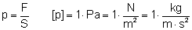
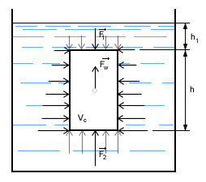
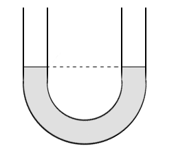
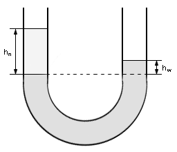
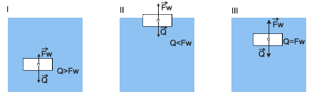
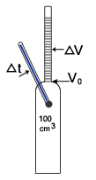
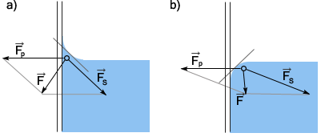

Prawo Pascala
Każdy kto choć raz próbował nurkować w wodzie odkrył, że im głębiej się schodzi pod wodę tym mocniejszy czujemy ból w uszach. Ale jeżeli będziemy znajdować się na konkretnej głębokości i będziemy poruszać się w kierunku poziomym (nie zmieniając głębokości), siła działająca na błonę bębenkową będzie stała. Nawet jeżeli odchylimy głowę na bok (jedno ucho będzie znajdować się na górze drugie na dole) różnicy nie odczujemy. Prawo o tym zjawisku sformułował Pascal i mówi ono:
|
Prawo to mówi, że ciśnienie jakie oddziaływuje na ścianę naczynia z wodą przy dolnej krawędzi (przy dnie) jest tak samo silne jak to działające na dno.
Wiemy już jak działa ciśnienie w wodzie. Zastanówmy się teraz, czym jest ciśnienie i jaką ma wartość. Ciśnieniem nazywamy stosunek siły do powierzchni, na którą oddziaływuje:

Zastanówmy się co się stanie po wykonaniu pewnego doświadczenia. Weźmy naczynie sześcienne bez pokrywy. Wypełnijmy je wodą prawie do pełna, a następnie weźmy pokrywę taką, żeby działała na zasadzie tłoka, czyli niech jej rozmiary pozwalają na "wpadnięcie" jej do naczynia, ale równocześnie niech ze wszystkich stron przylega idealnie do ścian naczynia. Połóżmy tę pokrywkę na powierzchni wody. Zacznijmy działać na pokrywkę siłą skierowaną pionowo do dołu. Kierunek taki upewnia nas, że pokrywka nie oddziaływuje bezpośrednio na żadną ze ścian naczynia, ani też nie oddziaływuje na dno (bo go nie dotyka - oddziela go od niego woda).
Zacznijmy zwiększać stopniowo siłę jaką działamy na pokrywkę. Nie zaobserwujemy tu zjawiska gdzie pokrywka obniży się, czyli woda (każdy płyn) nie zmieni swojej objętości pod wpływem działającej siły. Jeżeli nadal zwiększymy działającą siłę to nadal pokrywka nie obniży się. Jeżeli przyłożona siła będzie zbyt duża to naczynie może pęknąć i rozpaść się. Rozpadnie się któraś ze ścian, albo wszystkie naraz. Jaka jest tego przyczyna? Przykrywka przecież nie oddziaływała na ściany (bo siła była skierowana pionowo do dołu). To doświadczenie poucza nas, że ciśnienie działające w cieczy, a działa ono we wszystkich kierunkach, także na ściany, jest zależne od ciśnienia jakie oddziaływuje na ciecz z zewnątrz.
Stwierdziliśmy, że ciśnienie jakie istnieje w cieczy, zależy od głębokości na jakiej badamy działanie ciśnienia, oraz od ciśnienia zewnętrznego, które działa na tę ciecz. Możemy zapisać to wzorem:
Ciśnienie jakie panuje w cieczy na głębokości h równe jest sumie ciśnienia zewnętrznego działającego na ciecz (pzw) i ciśnieniu wewnętrznemu cieczy, które uzależnione jest właśnie od głębokości.
Przyczyna dla której wraz ze wzrostem głębokości zwiększa się ciśnienie jest bardzo prosta. Otóż łatwo zauważyć że nad badanym poziomem znajduje się pewna ilość cieczy, która oczywiście ma swoją masę, a więc i ciężar. Ciężar to siła. A jeżeli mamy siłę to wiemy, że stosunek wartości tej siły do powierzchni na jaką działa jest właśnie ciśnieniem.
Siłę taką która oddziałuje na ściany i dno nazywamy parciem lub siłą parcia.
Prawo Archimedesa
Podstawowym problemem związanym z cieczami jest możliwość unoszenia się na ich powierzchni ciał stałych. Dlaczego niektóre przedmioty pływają a inne nie zastanawiało ludzi już bardzo dawno temu. W starożytnej Grecji Archimedes odkrył prawo które rządzi tym zjawiskiem. Sformułował je następująco:
|
Opiszmy to prawo wzorami.
Gdzie: VC - to objętość zanurzonego ciała, natomiast ρP - to gęstość cieczy. Objętość przedmiotu jest równa objętości wypartej wody. Możemy zatem zapisać:

U-rurki
Rurkę, najczęściej szklaną, otwartą na obu końcach i wygiętą w kształt litery U nazywamy U-rurką. Dzięki niej możemy przedstawić doświadczenie które uczy nas jak ustala się poziom cieczy w naczyniach połączonych. Jeżeli do takiej U-rurki nalejemy wodę, to zarówno w obu częściach tej rurki woda będzie sięgać tej samej wysokości. Nie zależy to od kształtu ani od grubości rurki. Wiemy, że ciśnienie na tym samym poziomie (głębokości) jest równe dla całego zbiornika z cieczą. Ciśnienie zaś zależy od gęstości i wysokości słupa cieczy. Właśnie dlatego woda w obu rurkach sięga tej samej wysokości.

Jeżeli do rurki nalejemy wody i dodamy do niej nafty (nalewając z jednej strony, tak by wody było więcej od nafty) to wysokość na jaką będą sięgać będzie ciecz w obu rurkach będzie różna. Gęstość wody jest większa od gęstości nafty. Więc gdyby wysokość cieczy w obu rurkach była jednakowa to ciśnienie wywołane ich ciężarem nie było by równe.

W U-rurkach na tym samym poziomie jest jednakowe ciśnienie w obu rurkach, jeżeli poniżej tego poziomu jest ciecz jednorodna.
Pływanie ciał
Ciało jednorodne wrzuconego do cieczy zachowuje się w różny sposób, zależny od stosunku ciężarów właściwych ciała i cieczy. Rozróżniamy trzy przypadki:

- ciężar właściwy cieczy
- ciężar właściwy ciała
I.
Mnożymy obie strony nierówności przez objętość ciała zanurzonego w cieczy:
Uwzględniając, iż:
Q - ciężar ciała
- siła wyporu, jaką doznaje ciało ze strony cieczy
uzyskujemy:
To oznacza, że ciało tonie w cieczy.
II.
Postępując tak jak w przykładzie pierwszym otrzymany nierówność:
co oznacza, że ciało unosi się do góry i częściowo wynurza, czyli zaczyna pływać na powierzchni cieczy częściowo zanurzone.
III.
Czyli: , co oznacza, że ciało pływa wewnątrz cieczy znajdując się w stanie równowagi obojętnej.
Rozszerzalność cieplna cieczy
Do badania rozszerzalności cieczy służy przyrząd zwany dylatometrem cieczowym. Jest to naczynie szklane o ściśle określonej pojemności z wtopioną rurką zaopatrzoną w podziałkę, która służy do pomiaru przyrostu objętości cieczy, spowodowanego ogrzewaniem, przy czym przyrost temperatury jest mierzony za pomocą umieszczonego w naczyniu termometru.

|
- przyrost objętości ogrzewanej cieczy
- objętość początkowa cieczy
Wynikiem zmniejszenia się gęstości, a więc także i ciężaru właściwego cieczy i gazów ze wzrostem temperatury, jest zjawisko unoszenia. Badania rozszerzalności cieplnej cieczy wykazały, że jednakowe przyrosty temperatury powodują większe przyrosty objętości w temperaturach wysokich niż niskich. Wobec tego nie można mówić o stałym współczynniku rozszerzalności objętościowej, lecz o jego przeciętnej wartości, w określonym zakresie temperatur.
Siły międzycząsteczkowe w cieczach
Siły oddziaływania cząsteczek cieczy są na tyle duże, że utrudniają wzajemne ich oddalania się, lecz wobec istniejącej symetrii i równowagi sił działających na poszczególne cząsteczki - jest możliwe ich wzajemne przemieszczanie się. Z tego właśnie powodu ciecze wykazują ściśliwość, przeciwstawiając się zmianom objętości, lecz nie mają sprężystości postaci i przybierają zawsze kształt naczynia, w którym się znajdują.
Potwierdzeniem ruchu cieplnego cząsteczek cieczy jest zjawisko Browna. Polega ono na tym, że cząsteczki obserwowanej pod mikroskopem zawiesiny pyłku kwiatowego w wodzie wykonują ciągły ruch, którego liniami są krzywe łamane. Ruch ten uznano za wynik wielu uderzeń cząsteczek cieczy, przy czym jego zmieniający się kierunek odpowiada wypadkowemu pędowi uderzających cząsteczek. Zauważono również, że przy podwyższeniu temperatury wzrasta prędkość ruchu cząsteczek zawiesiny, co jest dowodem na to, że zwiększa się również prędkość ruchu cieplnego cząsteczek cieczy.
Skutkiem dużych różnic prędkości poszczególnych cząsteczek cieczy w ruchu cieplnym jest istnienie w każdej temperaturze pewnej liczby cząsteczek, będącej w pobliżu powierzchni swobodnej. Ich prędkość i energia kinetyczna jest wystarczająca, aby pokonać siły przyciągania międzycząsteczkowego i opuścić ciecz, przedostając się do otaczającej atmosfery. Proces ten nazywamy parowaniem. Im wyższa temperatura cieczy, tym większa jest energia kinetyczna jej cząsteczek, a więc tym większa ich liczba wydostaje się ponad powierzchnię swobodną.
Po osiągnięciu temperatury wrzenia średnia energia kinetyczna cząsteczek cieczy staje się tak duża, że umożliwia pokonanie sił międzycząsteczkowych i ciśnienia zewnętrznego, a tym samym swobodne przedostawanie się cząsteczek cieczy do atmosfery, Występuje wtedy zjawiska wrzenia. Im wyższe ciśnienie zewnętrzne, tym większą energię kinetyczną muszą mieć cząsteczki opuszczające ciecz, a więc tym wyższa jest temperatura wrzenia.
Zjawiska cząsteczkowe w cieczach
Wynikiem oddziaływania sił międzycząsteczkowych oraz ruchu cząsteczek są występujące w cieczach zjawiska: napięcia powierzchniowego, menisku, włoskowatości oraz dyfuzji i osmozy, zwane zjawiskami cząsteczkowymi.
Jeżeli położymy cienką żyletkę ostrożnie na powierzchni wody, to zauważymy, że żyletka nie będzie tonąć, lecz utrzymywać się na powierzchni wody, przy czym powierzchnia wody będzie uginać się pod nią. Zjawisko takie nosi nazwę napięcia powierzchniowego. Jego przyczyną są różnice wzajemnego oddziaływania cząsteczek cieczy w warstwie powierzchniowej i w głębi cieczy. Wiemy, że pomimo istnienia dużych sił przyciągania, cząsteczki wewnątrz cieczy mogą się wzajemnie przemieszczać, gdyż działające na każdą z nich siły przyciągania, pochodzące od jednych cząsteczek, równoważone są przez siły pochodzące od innych cząsteczek. Natomiast w warstwie powierzchniowej na cząsteczki działają jedynie siły przyciągania skierowane do wnętrza cieczy, gdyż nie są zrównoważone siłami działającymi w kierunku przeciwnym. W wyniku tego na powierzchni cieczy tworzy się napięta błonka, która dąży do maksymalnego zmniejszenia jej powierzchni. Napięcie powierzchniowe jest przyczyną kulistości kropel, gdyż najmniejszej powierzchni określonej objętości cieczy odpowiada właśnie kształt kuli.
Wynikiem wzajemnego oddziaływania cząsteczek cieczy i stykającego się z nią ciała stałego są zjawiska: zwilżania i menisku.
Jeżeli do naczynia z wodą zanurzymy szklankę, to unosząc ją powoli, to możemy łatwo zauważyć wznoszenie się wody, przywartej do jej dna. Po chwili woda odrywa się od dna, lecz pozostaje ono zwilżone. Warstewka wody pokrywająca dno szklanki, świadczy o tym, że siły wzajemnego przyciągania cząsteczek wody i szkła, czyli siły przylegania są większe od siły przyciągania działających między cząsteczkami wody, czyli sił spójności. Jeżeli powtórzymy to samo doświadczenia, lecz zamiast wody użyjemy rtęci, zauważymy, że nie nastąpi zwilżenie dna szklanki. A więc wielkość siły przylegania zależy zarówno od rodzaju cieczy, jak i od rodzaju stykającego się z nią ciała stałego.
Siły przylegania są również przyczyną powstawania wklęsłości powierzchni wody (menisku wklęsłego) oraz wypukłości rtęci (menisku wypukłego) w miejscach zetknięcia się powierzchni tych cieczy ze ścianką naczynia.

W przypadku wody (rysunek a) siła przylegania , której podlegają jej cząsteczki znajdujące się w pobliżu ścianki naczynia, jest większa od siły spójności , czyli oddziaływania na nie sąsiednich cząsteczek, wypadkowa zaś tych sił
W przypadku rtęci (rysunek b) siła przylegania jest znacznie mniejsza od siły spójności , a wypadkowa